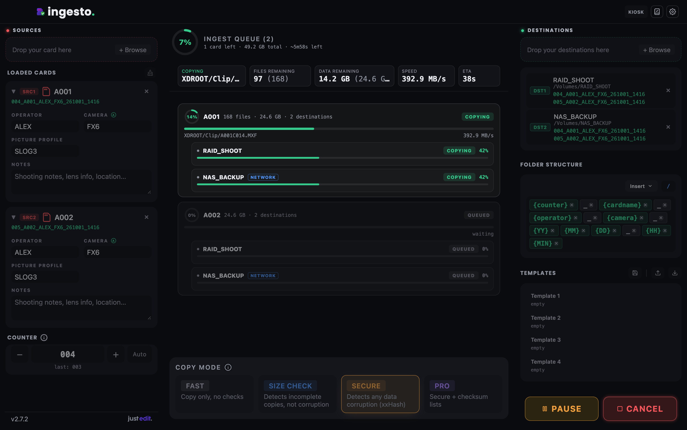
ingesto copie les rushes de vos cartes caméra sur autant de disques que nécessaire, puis relit chaque copie pour s'assurer qu'elle est identique à la carte. Il est gratuit, libre, et fonctionne sur macOS, Windows et Linux.
ingesto n'existe qu'en anglais. Ce manuel cite donc les boutons et les messages tels qu'ils apparaissent à l'écran, en gras : START INGEST, Settings… L'explication, elle, est en français.
ingesto ne supprime, ne renomme et n'écrase jamais rien sur une carte qu'il copie. Pendant l'ingest d'une carte, toute écriture sur celle-ci est refusée. Seule exception : Card Tracking, une option désactivée par défaut qui n'écrit que son propre petit fichier journal (voir chapitre 14).
Le mot verified n'apparaît que si chaque fichier a été relu sur chaque destination et comparé à la carte (modes SECURE et PRO). Une copie FAST affiche not verified, une copie SIZE CHECK affiche sizes checked, partout : à l'écran, dans le rapport, sur votre téléphone. Un ingest avec des erreurs n'est jamais présenté comme réussi.
Un disque débranché, deux cartes qui atterriraient dans le même dossier, une carte vide : ingesto s'arrête avant d'écrire quoi que ce soit, nomme le problème, et vous dit que rien n'a été copié.
La dernière version se trouve sur la page des versions : github.com/noar-justedit/ingesto/releases/latest. Choisissez le fichier correspondant à votre système.
.dmg.Deux paquets sont proposés : le .AppImage fonctionne sur la plupart des distributions sans installation ; le .deb s'installe sur Debian et Ubuntu.
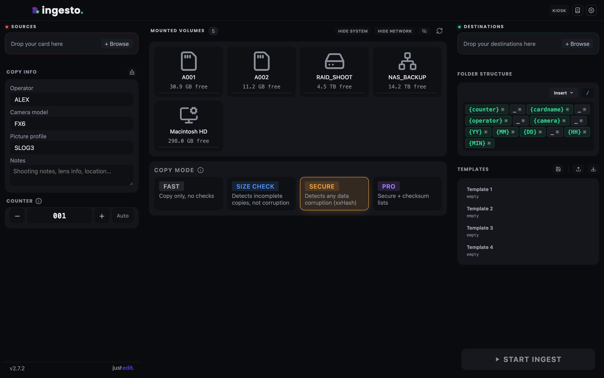
Pas d'assistant de configuration. La fenêtre s'ouvre directement, avec vos cartes et disques montés au centre. Le mode est SECURE, le réglage recommandé. Vous pouvez travailler tout de suite ; le chapitre 3 montre comment.
Quand une nouvelle version sort, ingesto affiche New version available au lancement. Get it ouvre la page de téléchargement, Later ferme l'avis.
Pendant un ingest, ingesto empêche l'ordinateur de se mettre en veille. L'écran peut s'éteindre ; la copie continue.
L'essentiel sur une page. Chaque étape est détaillée dans les chapitres suivants.
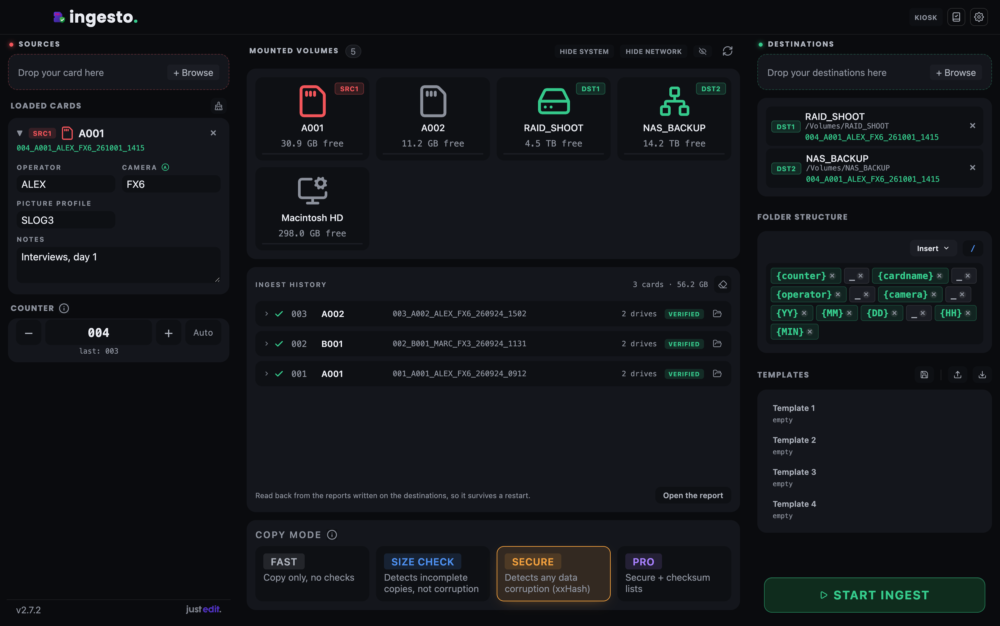
Ne formatez une carte qu'après un ingest vérifié (SECURE ou PRO) sur au moins deux disques, avec un bilan vert. ingesto ne formatera jamais une carte à votre place.
Trois colonnes, à lire de gauche à droite : ce que vous copiez, ce qui se passe, où ça va.
| Zone | Ce qu'on y trouve |
|---|---|
| Gauche : SOURCES | Les cartes à copier, avec leurs informations (opérateur, caméra, profil d'image, notes), et le compteur en bas. |
| Centre | MOUNTED VOLUMES : toutes les cartes, tous les disques et partages réseau branchés. INGEST HISTORY : les cartes déjà copiées sur les destinations chargées. COPY MODE en bas. Pendant un ingest, cette colonne affiche la file d'ingest à la place. |
| Droite : DESTINATIONS | Les disques qui recevront les copies, la FOLDER STRUCTURE, les TEMPLATES et le bouton START INGEST. |
| Bouton | Usage |
|---|---|
| KIOSK | Passe en mode kiosque, un écran simplifié et verrouillé pour un poste partagé (chapitre 15). |
| Icône livre | Vérifie un dossier copié précédemment, sans recopier (chapitre 13). |
| Icône engrenage | Ouvre les réglages, Settings (chapitre 14). |
Survolez un bouton ou une icône pour afficher une courte explication. Les petits boutons ⓘ à côté de certains titres ouvrent une explication détaillée.
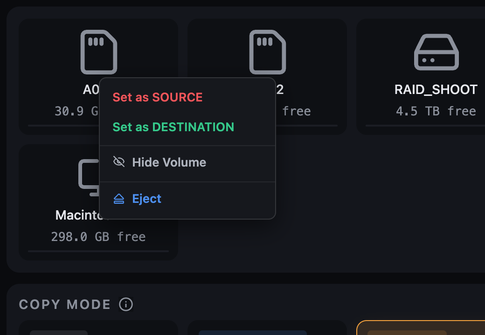
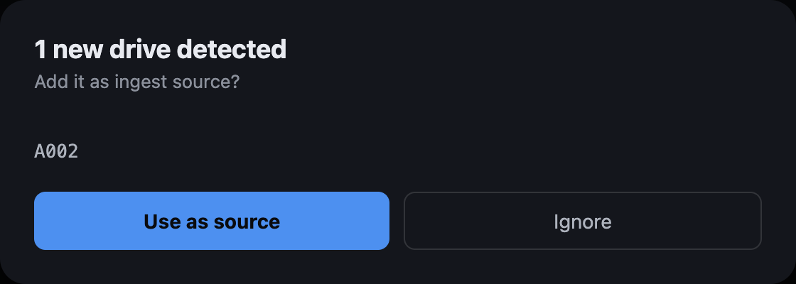
Quand vous insérez une nouvelle carte, ingesto propose de l'utiliser : Use as source la charge, Ignore la laisse de côté.
Une carte chargée porte un badge rouge SRC1, dans la colonne Sources comme sur sa vignette. Le dossier qu'elle va créer s'affiche en vert sous son nom.
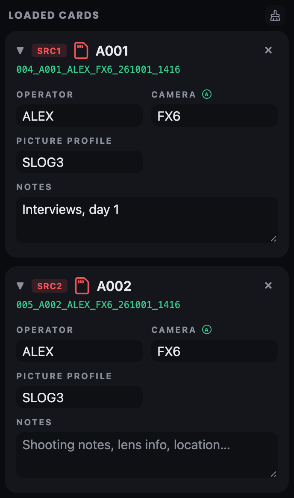
Chaque carte a quatre champs :
Ces valeurs peuvent servir dans le nom du dossier et apparaissent dans le rapport.
s-log 3 devient SLOG3.Chargez autant de cartes que vous voulez. Chacune a son bloc, repliable avec la flèche. Elles passent l'une après l'autre, chacune vers toutes les destinations, chacune dans son propre dossier numéroté. Retirez une carte avec sa ×.
Si le verrou de la carte est enclenché, ingesto vous prévient avant de démarrer. Vous pouvez continuer (rien n'est jamais écrit sur la carte de toute façon) ou retirer la carte.
Une destination est un disque, un RAID, un partage réseau ou un dossier qui recevra une copie complète de chaque carte.
Chargez-les comme les cartes : glisser sur la zone DESTINATIONS, clic droit → Set as DESTINATION, ou + Browse pour choisir un dossier précis. Chacune reçoit un badge vert DST1, DST2…
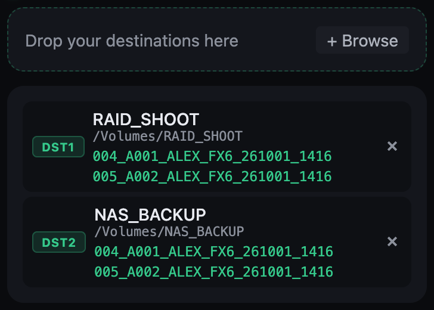
Deux est le minimum habituel en tournage : par exemple un disque de travail et un disque de sauvegarde. ingesto écrit sur tous en un seul passage : une troisième copie coûte peu de temps en plus.
Chaque carte est copiée dans son propre dossier. Son nom est construit par la FOLDER STRUCTURE : une rangée d'éléments que vous assemblez.
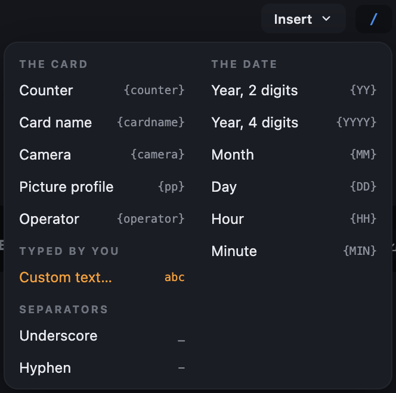
Cliquez sur Insert pour ajouter un élément à la fin de la structure. Les éléments sont rangés par famille :
DAY1 ou le nom d'un client._ ou trait d'union -.Glissez les éléments pour les réordonner. La × d'un élément le retire.
Double-cliquez sur la rangée pour taper toute la structure à la main.
| Élément | Devient | Exemple |
|---|---|---|
{counter} | Le numéro de la carte (chapitre 8) | 004 |
{cardname} | Le nom de la carte | A001 |
{operator} | Le champ opérateur | ALEX |
{camera} | Le champ caméra | FX6 |
{pp} | Le champ profil d'image | SLOG3 |
{YY} / {YYYY} | Année, 2 ou 4 chiffres | 26 / 2026 |
{MM} {DD} | Mois, jour | 10 01 |
{HH} {MIN} | Heure, minute de l'ingest | 14 35 |
La structure par défaut donne par exemple : 004_A001_ALEX_FX6_261001_1435.
Un champ vide ne crée rien, pas même un séparateur orphelin. Vous n'obtiendrez jamais 004__FX6.
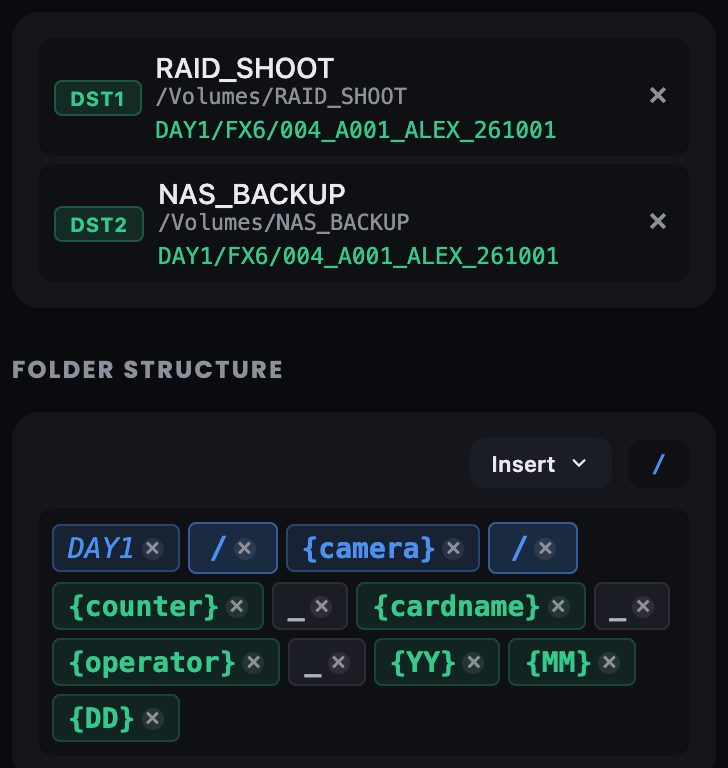
Le bouton / commence un sous-dossier. Un seul ingest peut ainsi construire toute l'arborescence de votre projet, à l'identique sur chaque destination.
Exemple : DAY1 / {camera} / {counter}_{cardname}… donne DAY1/FX6/004_A001_ALEX_261001.
Les éléments de sous-dossier s'affichent en bleu, le dossier propre à la carte en vert. Un élément en italique est un texte que vous avez tapé.
Quelques règles, toutes contrôlées avant la moindre écriture :
{counter} doit se trouver dans le dossier propre à la carte, après le dernier /.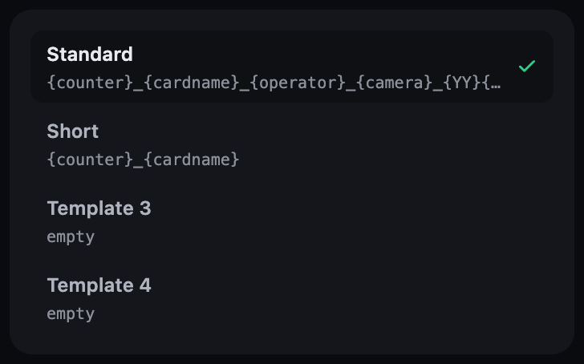
La zone TEMPLATES garde quatre structures, chacune avec un nom. Celle en cours d'utilisation porte une coche.
Le compteur numérote vos cartes : 001, 002, 003… Il reste en bas de la colonne de gauche.
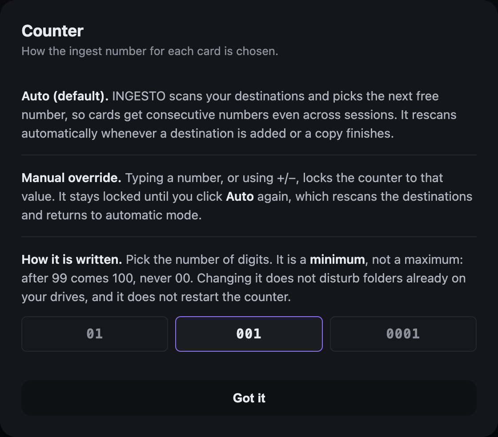
ingesto regarde ce qui existe déjà sur vos destinations et prend le numéro libre suivant. Les cartes ont des numéros qui se suivent d'une session et d'un jour à l'autre. last: 003 sous le compteur indique ce qu'il a trouvé.
Tapez un numéro ou utilisez − / + pour imposer une valeur. Elle reste bloquée jusqu'à ce que vous cliquiez sur Auto, qui revient à la numérotation automatique.
Le ⓘ à côté de COUNTER permet de choisir 2, 3 ou 4 chiffres (07, 007, 0007). C'est un minimum : après 99 vient 100.
Le compteur est global à la destination, même avec des sous-dossiers par jour ou par caméra. Un trou dans la numérotation signifie donc qu'une carte manque.
Si le numéro choisi existe déjà sur une destination, ingesto refuse de démarrer et propose de changer le compteur ou de vous montrer le dossier existant. On n'écrit jamais dans le dossier d'une carte existante.
Le mode décide du niveau de contrôle de chaque copie. Il se choisit en bas de la colonne centrale.
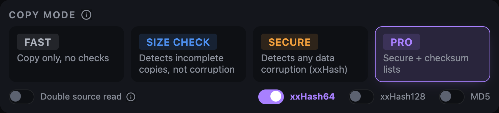
| Mode | Ce qu'il contrôle | Quand l'utiliser |
|---|---|---|
| FAST | Rien. Copie seule. Affiché not verified. | Matériel jetable, ou copie supplémentaire que vous vérifierez ailleurs. |
| SIZE CHECK | Que chaque fichier copié a la même taille que l'original. Détecte une copie interrompue ou un disque plein, pas un fichier corrompu. Affiché sizes checked. | Quand le temps manque vraiment et que vous acceptez le risque. |
| SECURE | Chaque fichier est relu sur chaque destination et son empreinte (xxHash) comparée à celle de la carte. Détecte toute corruption, jusqu'au moindre bit. | Recommandé pour tous les rushes. Le réglage par défaut. |
| PRO | Tout ce que fait SECURE, plus des listes de checksums et des manifestes, le choix de l'algorithme, et la double lecture de la source en option. | Quand une post-production, une archive ou un workflow demande des fichiers de checksums. |
Le ⓘ à côté de COPY MODE explique chaque mode dans l'application.
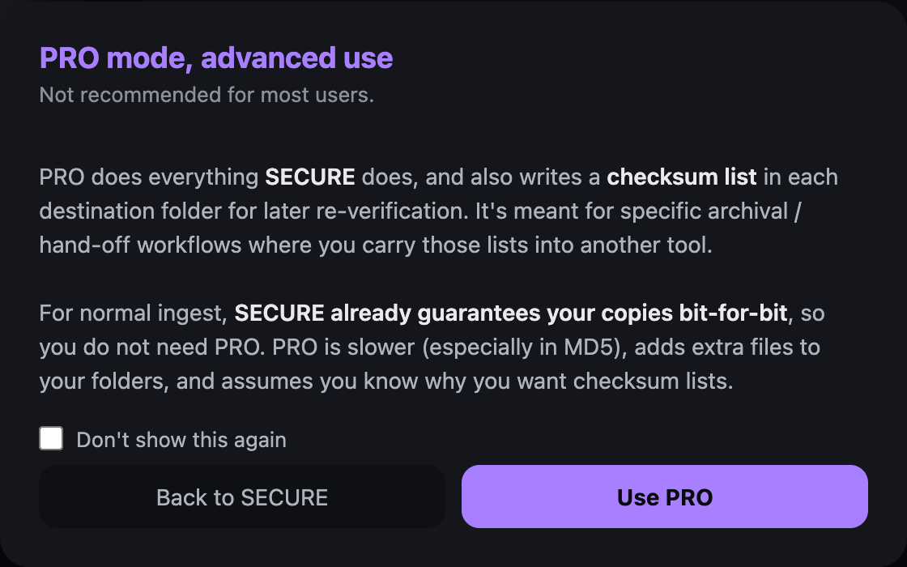
SECURE garantit déjà vos copies au bit près. PRO ajoute des fichiers destinés à d'autres outils. Si personne ne vous a demandé de listes de checksums, SECURE est le bon choix.
Les fichiers de checksums et les manifestes écrits en PRO se choisissent dans les réglages, section WRITE CHECKSUM (chapitre 14).
Vérifier, c'est relire chaque fichier sur chaque disque. ingesto contourne volontairement la mémoire cache de l'ordinateur pour que la lecture vienne vraiment du disque. Sur un disque lent ou un partage réseau, la vérification peut durer aussi longtemps que la copie.
Son libellé indique ce qui manque : Load a card (chargez une carte), puis Choose a destination (choisissez une destination), puis START INGEST quand tout est prêt.
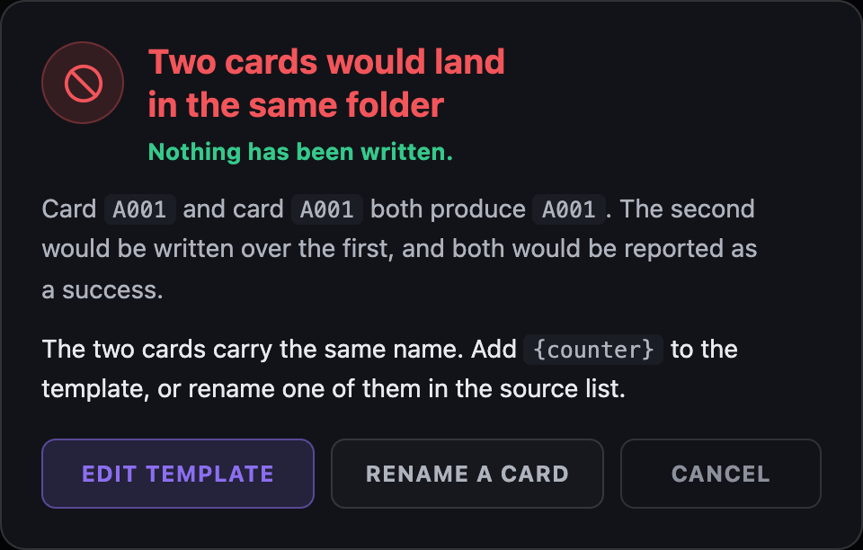
Quand vous cliquez sur Start, ingesto contrôle tout d'abord. Si quelque chose ne va pas, une fenêtre explique quoi, pourquoi, et que faire. La ligne Nothing has been written confirme que vos disques et votre carte sont intacts.
Cas typiques :
Pendant l'ingest, la colonne centrale affiche la file, et seulement elle.
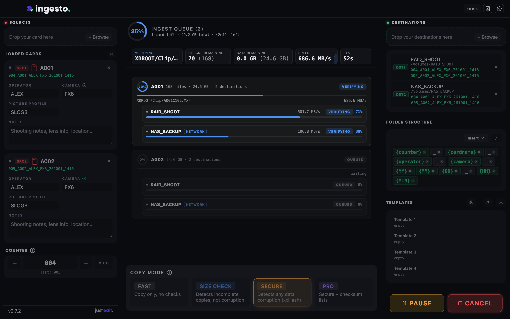
PAUSE termine le fichier en cours puis attend ; Resume reprend. CANCEL arrête l'ingest. Tout le reste (cartes, destinations, structure, compteur, mode) est verrouillé pendant la copie : ce que vous modifiez après avoir cliqué sur Start ne peut pas toucher une copie déjà lancée.
Si vous essayez de quitter pendant une copie, ingesto demande confirmation. Votre carte reste intacte dans tous les cas.
Une fenêtre de bilan s'ouvre, accompagnée d'un son. Sa couleur et son titre vous disent tout de suite si vous pouvez vous fier aux copies.
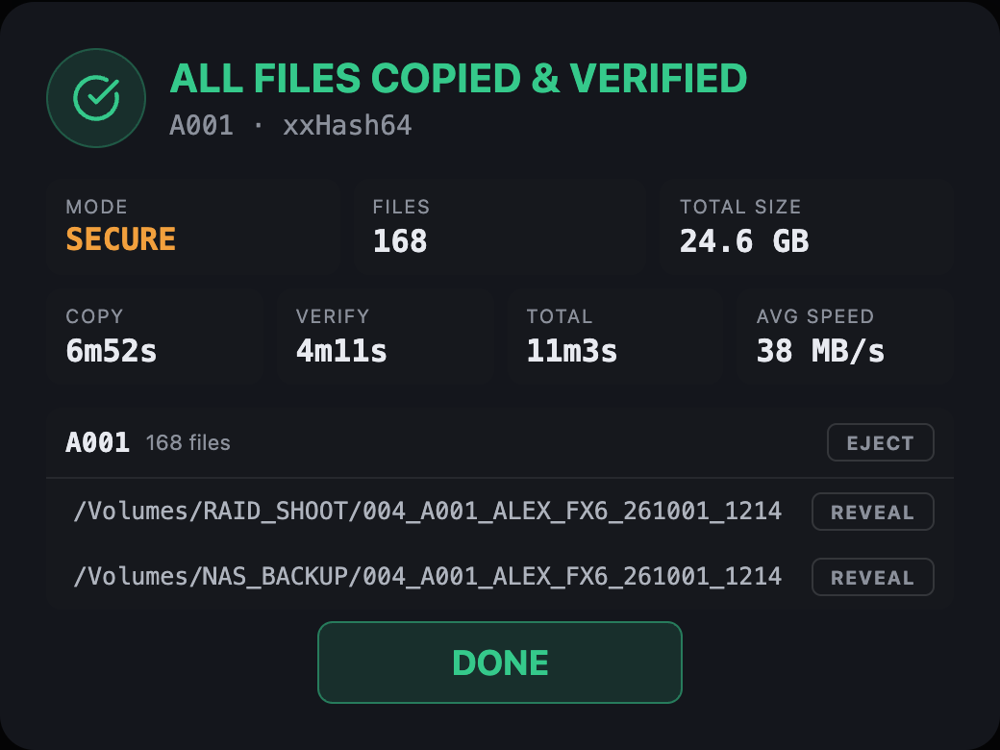
Le titre dépend du mode :
En dessous : mode, nombre de fichiers, taille, durée de chaque phase et vitesse moyenne. Puis, pour chaque carte, son dossier sur chaque disque.
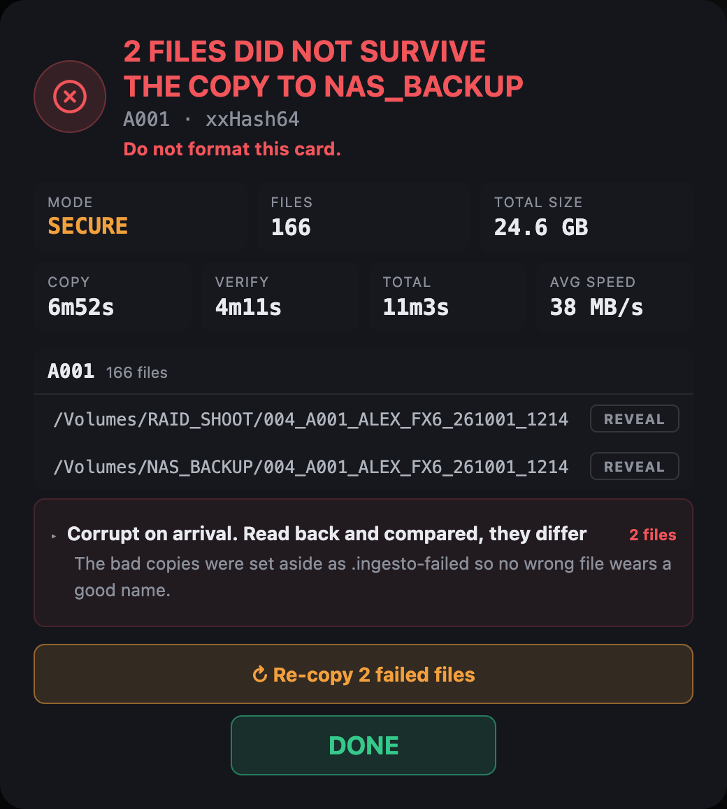
La fenêtre passe au rouge et dit clairement ce qui s'est produit, par exemple 2 FILES DID NOT SURVIVE THE COPY TO NAS_BACKUP (2 fichiers n'ont pas survécu à la copie vers NAS_BACKUP). Sous le titre : Do not format this card, ne formatez pas cette carte.
La liste en dessous regroupe les fichiers en échec par cause. Une copie défectueuse est mise de côté sous un nom finissant par .ingesto-failed : aucun fichier abîmé ne porte un nom valide dans votre dossier de livraison.
Re-copy 2 failed files recopie et revérifie ces fichiers, et seulement eux. La file affiche la progression comme d'habitude.
Tant que le bilan n'est pas vert et vérifié, gardez la carte. Si une recopie échoue encore sur le même disque, soupçonnez le disque ou son câble. Si ingesto indique que la carte ne rend pas deux fois les mêmes données, c'est la carte elle-même qui lâche : mettez-la de côté.
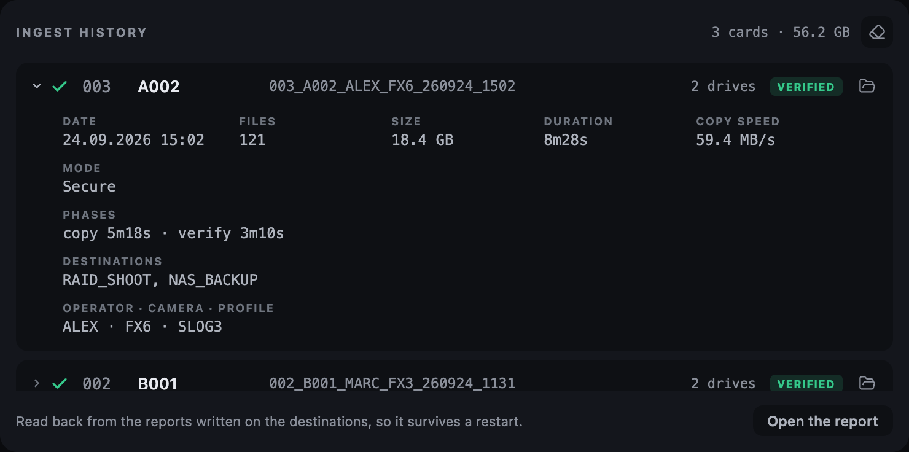
Dès qu'une destination est chargée, la colonne centrale liste toutes les cartes déjà copiées dessus : numéro, nom de carte, dossier, nombre de disques, et un badge d'état VERIFIED ou FAILED.
Après chaque ingest, ingesto met à jour un rapport à la racine de chaque destination. Open the report, sous l'historique, l'ouvre dans votre navigateur.
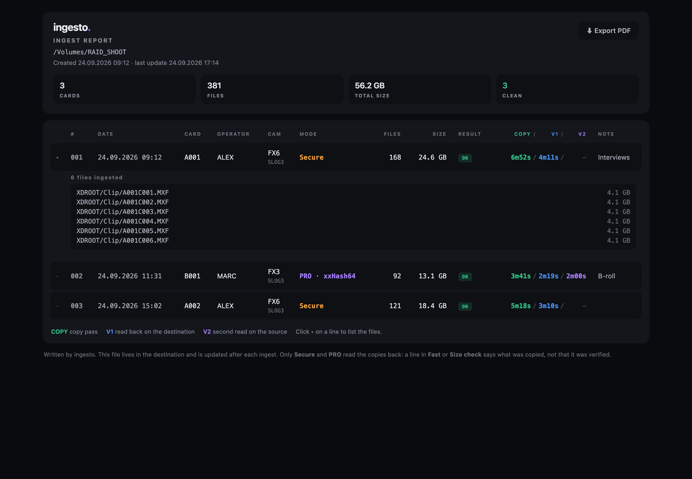
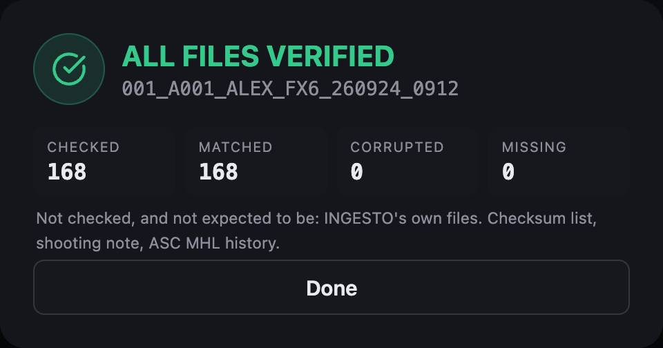
L'icône livre en haut à droite revérifie un dossier déjà copié, sans rien recopier.
Le résultat indique combien de fichiers ont été contrôlés, sont conformes, corrompus ou manquants. ALL FILES VERIFIED signifie que le dossier est toujours identique à ce qui a été copié.
Avant de confier un disque à la post-production, après un long transport, ou des mois plus tard avant l'archivage. Le dossier doit contenir une liste de checksums ou un manifeste : laissez Write Checksum activé dans les réglages (il l'est par défaut).
L'icône engrenage en haut à droite ouvre les réglages, Settings. Chaque section a son interrupteur. Done ferme la fenêtre ; tout est enregistré immédiatement.
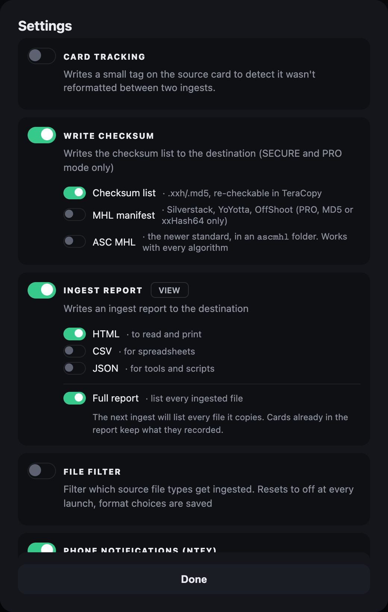
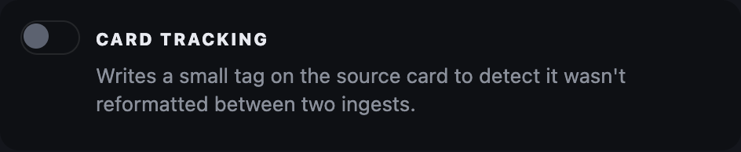
Écrit un petit fichier, .ingesto.json, sur la carte. Quand la même carte revient, ingesto sait si elle a été formatée depuis son dernier ingest. C'est la seule option qui écrive sur une carte, et c'est pourquoi elle demande confirmation quand vous l'activez.
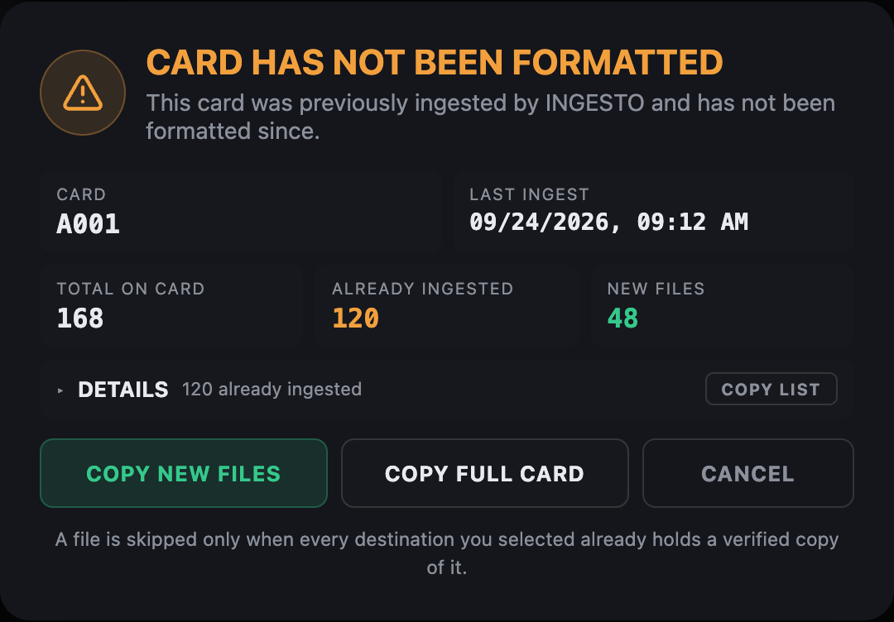
Si une carte revient sans avoir été formatée, ingesto indique combien de fichiers ont déjà été copiés et combien sont nouveaux :
Utile quand une carte repart dans la caméra entre deux ingests.
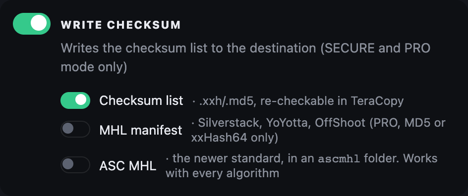
Écrit, à côté des rushes, des fichiers qui permettent à n'importe qui de recontrôler la copie plus tard (SECURE et PRO seulement) :
.xxh / .md5, lisible par ingesto et TeraCopy.ascmhl.Activez ce que demande votre post-production. Si personne ne demande rien, la liste de checksums seule suffit.
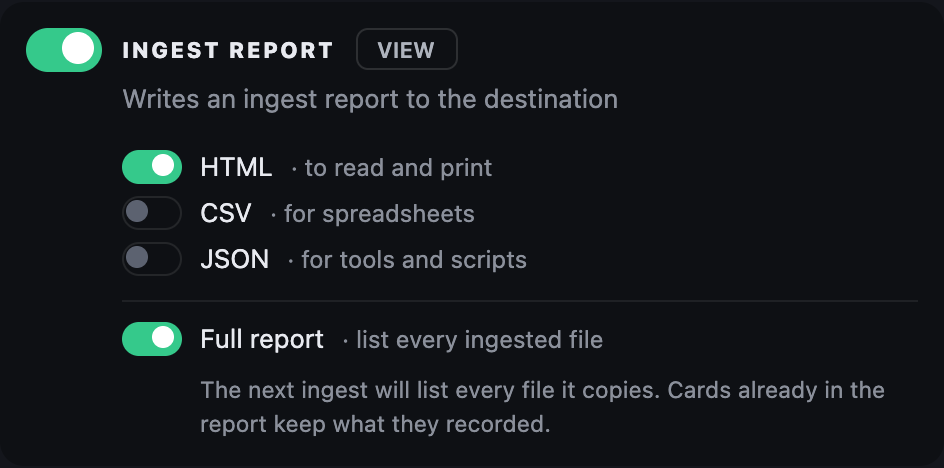
Formats : HTML pour lire et imprimer, CSV pour un tableur, JSON pour des scripts. Full report liste chaque fichier de chaque carte ; désactivé, chaque carte tient en une ligne. VIEW ouvre le rapport actuel.
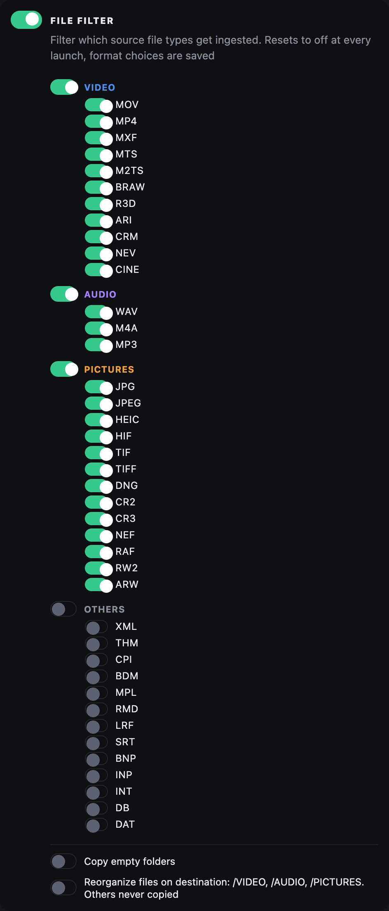
Ne copie que les types de fichiers choisis : vidéo, audio, images, et autres fichiers (fichiers annexes comme XML, THM…), type par type.
Copy empty folders conserve les dossiers vides de la carte.
Reorganize files on destination range les fichiers copiés dans /VIDEO, /AUDIO, /PICTURES. Les autres fichiers ne sont alors jamais copiés.
Un ingest filtré n'est pas une copie complète de la carte. C'est pour cela que le filtre se désactive à chaque lancement : il faut le rallumer volontairement à chaque fois. Votre choix de formats, lui, est conservé.
Beaucoup de caméras ont besoin de leurs fichiers annexes (XML, dossiers de métadonnées) pour être lues correctement en montage. Dans le doute, laissez le filtre désactivé.
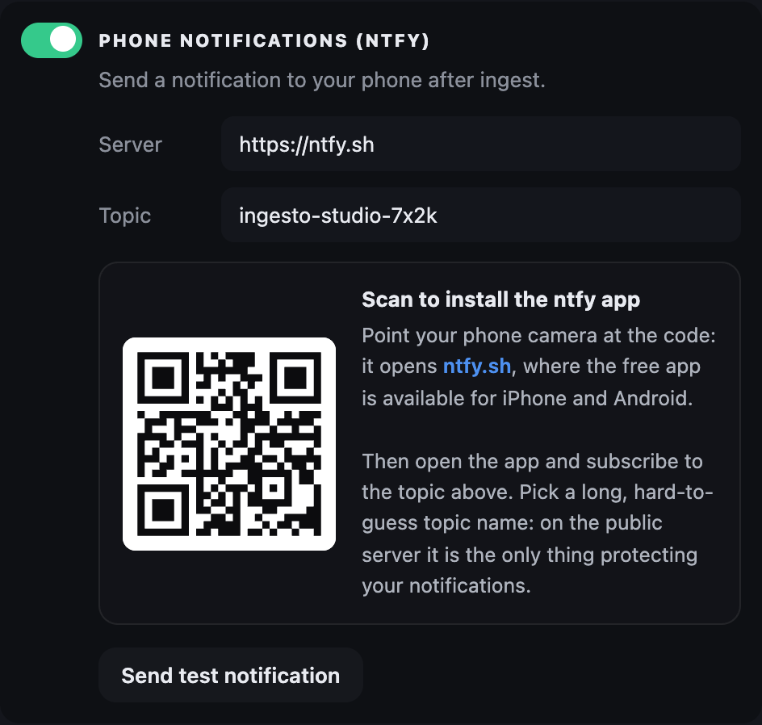
Recevez une notification sur votre téléphone après chaque carte : carte, opérateur, caméra, nombre de fichiers, taille, mode, résultat par disque, durée de chaque phase, notes. Une carte en échec est envoyée en priorité haute.
Laissez le Server sur https://ntfy.sh sauf si vous avez votre propre serveur.
Sur le serveur public, le nom du topic est la seule protection de vos notifications. Quiconque le connaît peut les lire. Choisissez quelque chose comme ingesto-studio-7x2k, pas ingesto.
Deux options pour les utilisateurs techniques qui automatisent leur workflow avec des scripts. Post-Ingest Command lance une commande après chaque ingest. Card Handoff confie chaque carte à un script de votre choix, avec un document qui décrit ce qui a été copié et vérifié ; Dry run permet de le tester. Les deux exécutent exactement ce que vous tapez. Si vous ne savez pas quoi y mettre, laissez-les désactivées.
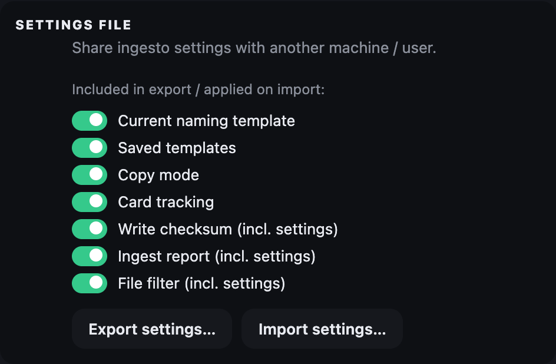
Pour configurer plusieurs postes à l'identique. Export settings… enregistre un fichier ; Import settings… l'applique sur un autre ordinateur. Les interrupteurs choisissent ce qui est inclus : structure actuelle, modèles, mode de copie, Card Tracking, checksums, rapport, filtre de fichiers.
Il n'y a pas de choix de langue : l'interface est en anglais. Les sons et le maintien en éveil de l'ordinateur sont automatiques. Le nombre de chiffres du compteur se règle depuis son propre ⓘ (chapitre 8), le code du kiosque depuis le bouton KIOSK (chapitre 15).
Une vue simplifiée, verrouillée et plein écran, pour un poste partagé par toute une équipe : l'opérateur arrive, insère sa carte, tape son nom, lance. Personne ne peut modifier les réglages.
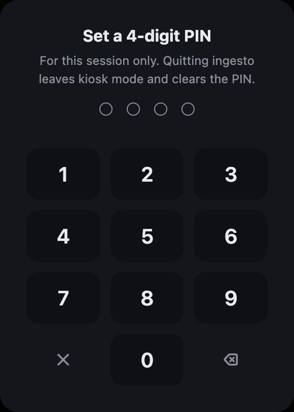
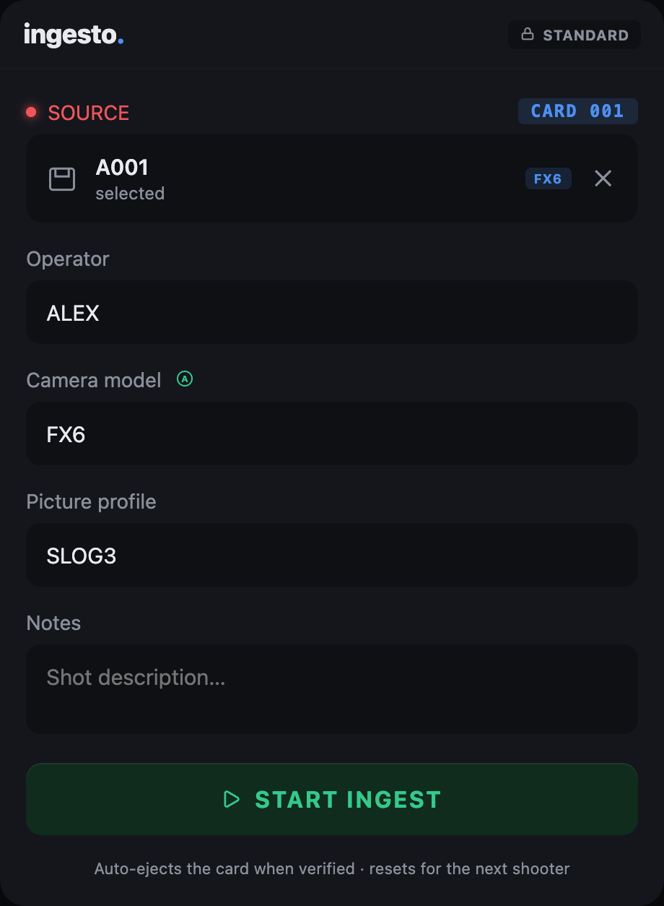
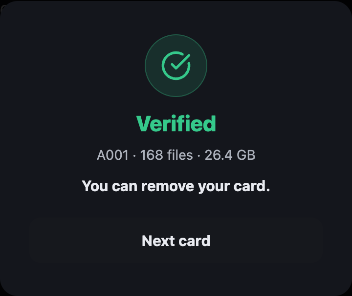
L'écran de résultat parle clairement :
Si aucune destination n'a été choisie, l'écran affiche Not set up yet et demande la personne qui a préparé le poste.
Cliquez sur STANDARD en haut à droite et saisissez le code. Après cinq erreurs, le pavé se bloque 30 secondes.
Quittez et relancez ingesto : il démarre toujours dans la fenêtre normale. Le code n'est jamais enregistré ; il ne vaut que pour la session.
La zone MOUNTED VOLUMES montre toutes les cartes, tous les disques et partages branchés, avec une icône par type (carte, disque, réseau, disque système) et l'espace libre.
| Commande | Usage |
|---|---|
| HIDE SYSTEM | Masque le disque interne de l'ordinateur. |
| HIDE NETWORK | Masque les partages réseau. |
| Clic droit → Hide Volume | Masque un volume précis. L'icône œil de l'en-tête réaffiche les volumes masqués. |
| Clic droit → Eject | Éjecte une carte ou un disque sans quitter ingesto. Non proposé pour le disque système ni les partages réseau, et refusé pendant un ingest. Si le volume était chargé, il est retiré une fois l'éjection réussie. |
| Flèche circulaire | Rafraîchit la liste. |
Sous Windows, la lettre de lecteur d'une carte est affichée dans la liste, par exemple LUMIX (D:), pour distinguer deux cartes identiques dans deux lecteurs. Le nom du dossier et le rapport utilisent le nom seul, LUMIX.
ingesto se charge des contrôles. Ces habitudes rendent le reste de la chaîne tout aussi sûr.
Les versions à partir de la 2.5.5 sont signées et ne devraient pas afficher ce message. Si vous le voyez, vous avez une version plus ancienne ou une copie compilée vous-même : clic droit sur l'application dans Applications → Ouvrir → Ouvrir à nouveau. Une seule fois suffit.
Cliquez sur la flèche de rafraîchissement. Vérifiez qu'il apparaît dans le Finder ou l'Explorateur. Vérifiez que HIDE SYSTEM / HIDE NETWORK ne le masquent pas, et cliquez sur l'icône œil pour afficher les volumes masqués.
Lisez la fenêtre : elle nomme le problème et dit quoi faire. Rien n'a été copié. Les causes les plus courantes sont un disque débranché, deux cartes portant le même nom sans compteur dans la structure, ou un numéro de compteur déjà utilisé.
C'est normal : chaque fichier est relu sur chaque disque, directement sur le support. Sur un partage réseau, la vérification peut durer aussi longtemps que la copie. C'est le prix d'un vrai contrôle.
Ne formatez pas la carte. Cliquez sur Re-copy. Si l'échec se reproduit sur le même disque, changez de câble ou de disque. Si ingesto indique que la carte rend des données différentes à chaque lecture, la carte lâche : mettez-la de côté.
En mode Auto, il suit ce qu'il trouve sur les destinations. Regardez last: sous le compteur. Pour imposer un numéro, tapez-le ; cliquez sur Auto pour revenir.
Cliquez sur Show it again dans la zone historique. Les rapports sur les disques n'ont jamais été touchés.
Vérifiez que le topic est exactement le même dans ingesto et dans l'application ntfy, et utilisez Send test notification. L'ordinateur doit être connecté à Internet.
Pour signaler un problème ou proposer une amélioration, ouvrez une issue sur github.com/noar-justedit/ingesto/issues. Indiquez votre version d'ingesto (en bas à gauche de la fenêtre) et votre système.
ingesto est un logiciel libre, sous licence GNU GPL v3. © Just Edit 2026.